Chunxiao Wang
Digital Humanities researcher & storyteller navigating AI, games, cultural heritage, and entertainment — exploring how we tell, preserve, and rewrite stories in a digital age.
About
I'm an MPhil student in Digital Humanities and Culture at Trinity College Dublin, coming from a background in Chinese Language and Literature. My work sits at the intersection of technology and the humanities — cultural heritage, game studies, and the facilities and institutions that hold culture in the first place.
Before this degree I worked across operations support, customer service, event coordination, and digital content production, which is part of why I care as much about how a project actually gets used as how it's designed.
- Research & writing: text analysis, interdisciplinary research, critical writing
- Interests: cultural heritage, game studies, facilities & cultural institutions
Digital & research
Data analysis, textual analysis, document management, curriculum development, Python scripting
Operations & facilities
Customer service, event setup & coordination, operational workflow support
Media & content
New media content production, video & photo editing, social media management
Software
Python, OpenRefine, LancsBox, Gephi, CapCut, GitHub
Featured research
MPhil dissertation work in progress
Reading romance at scale: player voices across three otome games
For my dissertation, I built a corpus of player reviews for three romance-focused games — Hakuoki: Kyoto Winds, Monster Prom, and Love and Deepspace — pulled from Steam, the App Store, and Google Play, then stripped of identifying information and normalised into one shared structure across platforms and languages.
Steam's recommend / not recommend judgements and App Store / Google Play star ratings become a baseline sentiment signal, which I pair with a qualitative coding framework covering narrative form, romance structure, gameplay structure, emotional response, and player agency — so the numbers and the close reading check each other rather than standing alone.
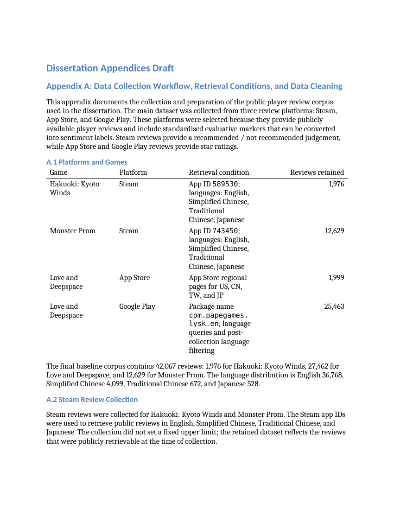
Interactive projects
Two finished, playable pieces — built end to end, from concept and content to interface.
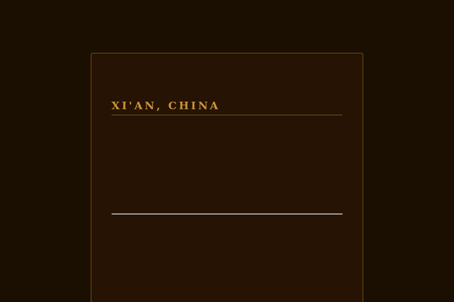
Voices of the Silk Road
An interactive narrative set on Xi'an's Huimin Jie (Muslim Quarter). Players choose between three perspectives — a Hui resident, a Central Asian merchant in the 8th-century Tang dynasty, and a present-day scholar — that branch apart and then converge on a shared ending. The structure is built around Authorized Heritage Discourse (Smith, 2006) and Transmedia Storytelling (Jenkins, 2003), as a way of making room for voices that official heritage narratives tend to leave out.
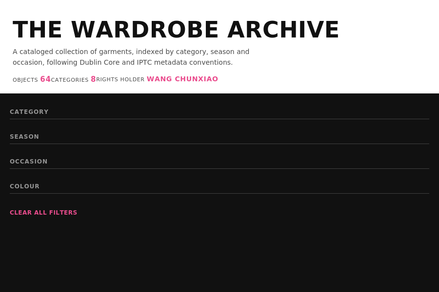
The Wardrobe Archive
A personal digital asset catalog for 64 garment items. I defined the metadata scheme and controlled vocabulary, designed the UX requirements — faceted search, annotated detail views, iterative visual direction — and then directed an AI coding assistant through three rounds of build and revision based on usability feedback.
Data & computational projects
Corpus tools, network analysis, and data management practice — the hands-on side of digital humanities.
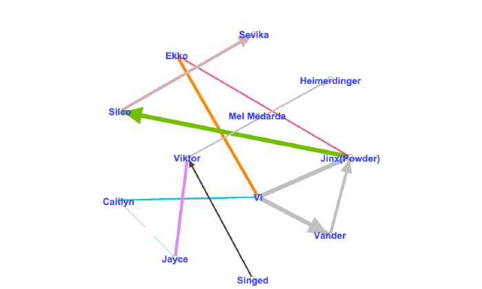
Corpus stylistics: Dickens vs. Austen, and a character network in Arcane
Used LancsBox's KWIC and GraphColl tools to compare how Dickens and Austen use the word "family" — in Dickens it clusters with class and control, in Austen with stability and marriage prospects — then built a Gephi network graph mapping character relationships and factions across the two rival districts in Arcane.
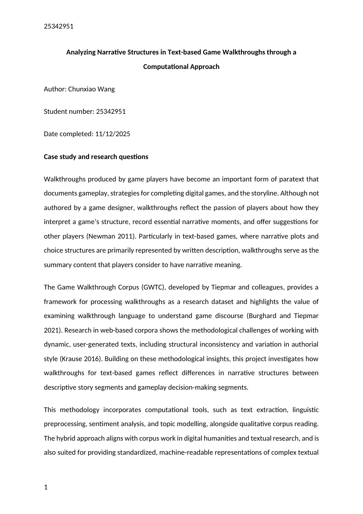
Analyzing narrative structure in game walkthroughs
A methodology for building a small corpus of text-based game walkthroughs and using computational text analysis — tokenisation, rule-based and POS-based classification — to test whether narrative description and gameplay instruction behave as distinct, identifiable modes of writing.
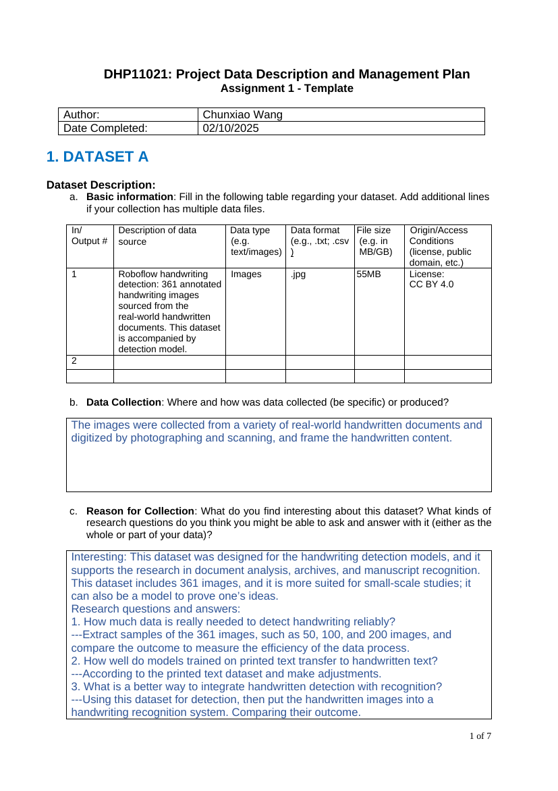
Evaluating a handwriting-recognition dataset and an open cultural-facilities dataset
A comparative data description and management plan for two very different datasets: a 361-image handwriting-detection collection, and South Dublin County Council's open data on local libraries, museums, and cultural facilities — covering data quality, cleaning needs, and a GDPR-aware storage plan.
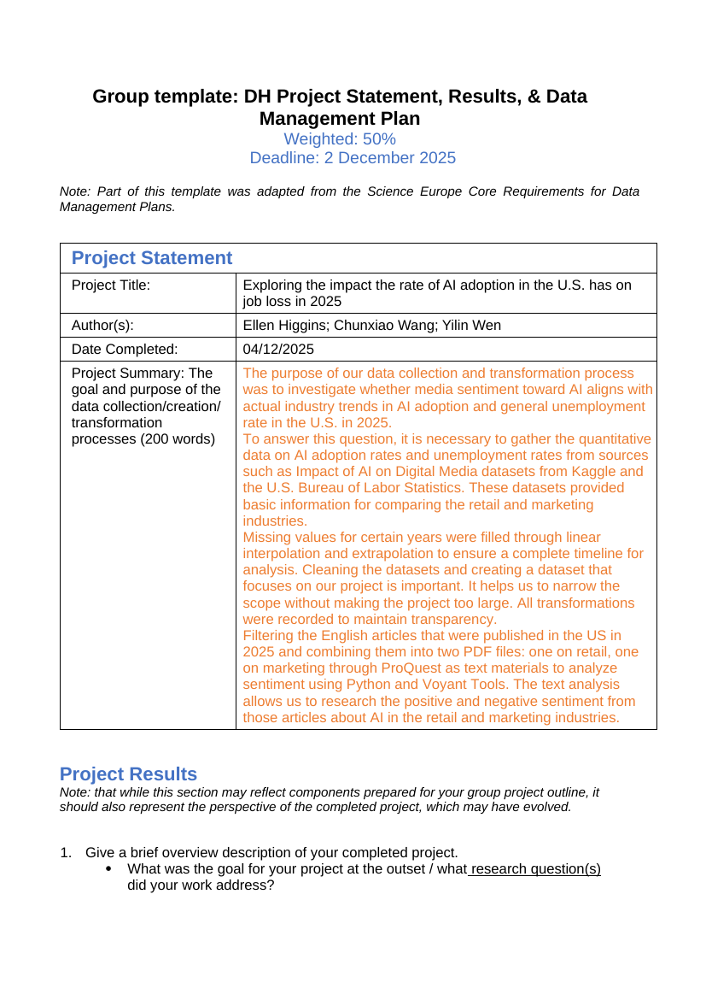
Does media sentiment about AI match real job-loss trends?
With two teammates, I compared U.S. media sentiment toward AI in the retail and marketing industries — drawn from ProQuest articles and analysed with Python and Voyant Tools — against actual AI adoption and unemployment data. The rate of unemployment didn't track AI adoption growth the way the media narrative suggested.
Critical writing
Essays on games, archives, and platforms — reading digital culture through Digital Humanities frameworks.
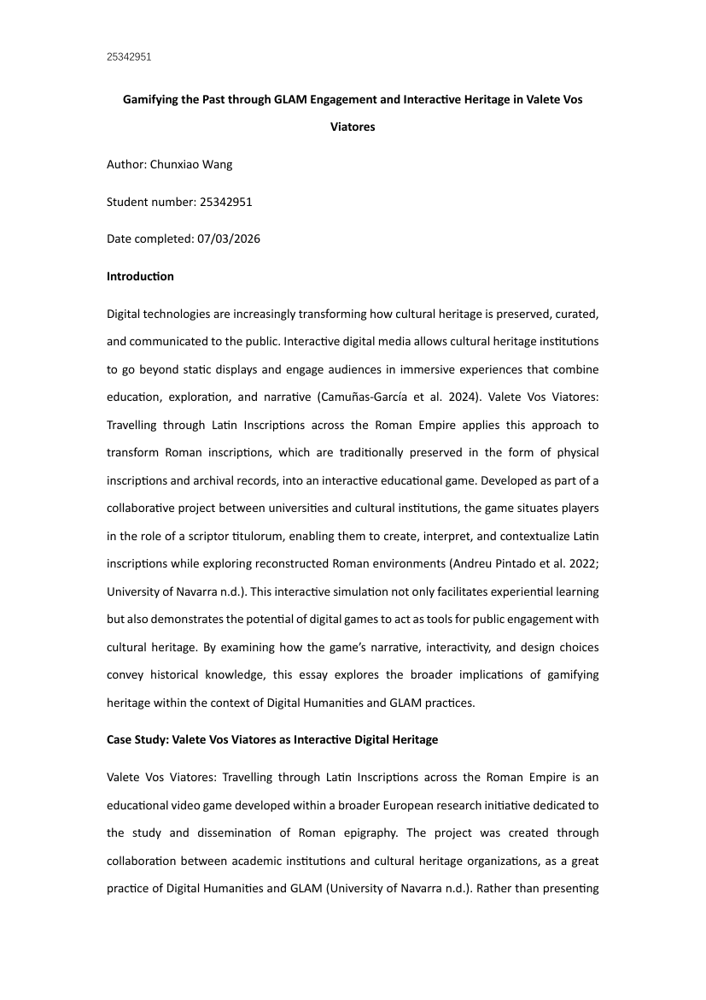
Gamifying the past: GLAM engagement in Valete Vos Viatores
An analysis of a Latin-epigraphy educational game built with European heritage institutions, looking at how its procedural, task-based design turns Roman inscription culture into a playable system — and where that formalises a field of practice that was historically far more fluid and contested.
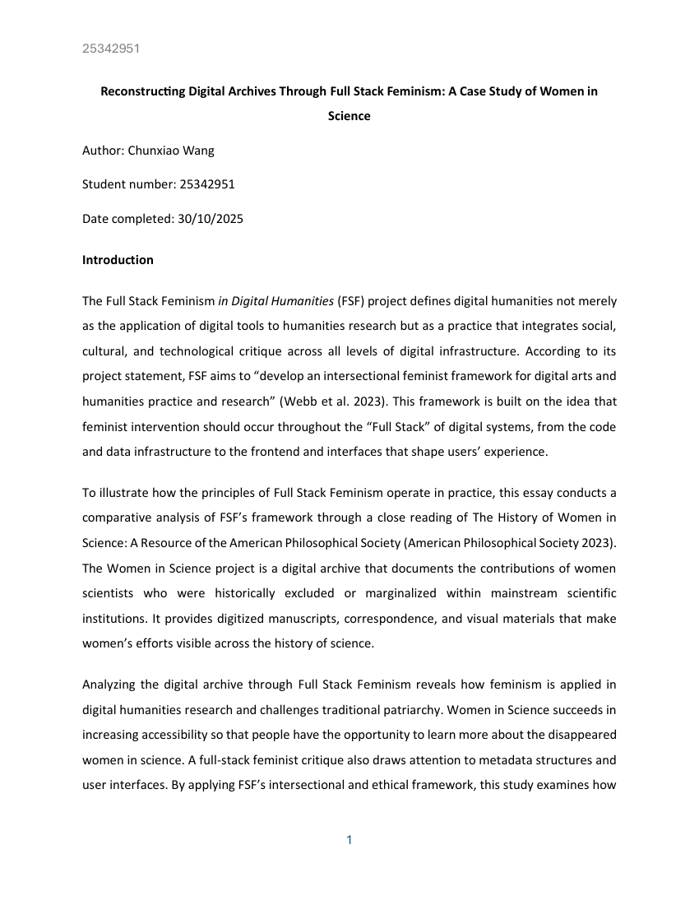
Reconstructing digital archives through Full Stack Feminism
A case study of the History of Women in Science digital archive, read through Full Stack Feminism's three-layer framework — data, infrastructure, and interface — to examine how feminist values can be built into a collection's design rather than added on afterwards.
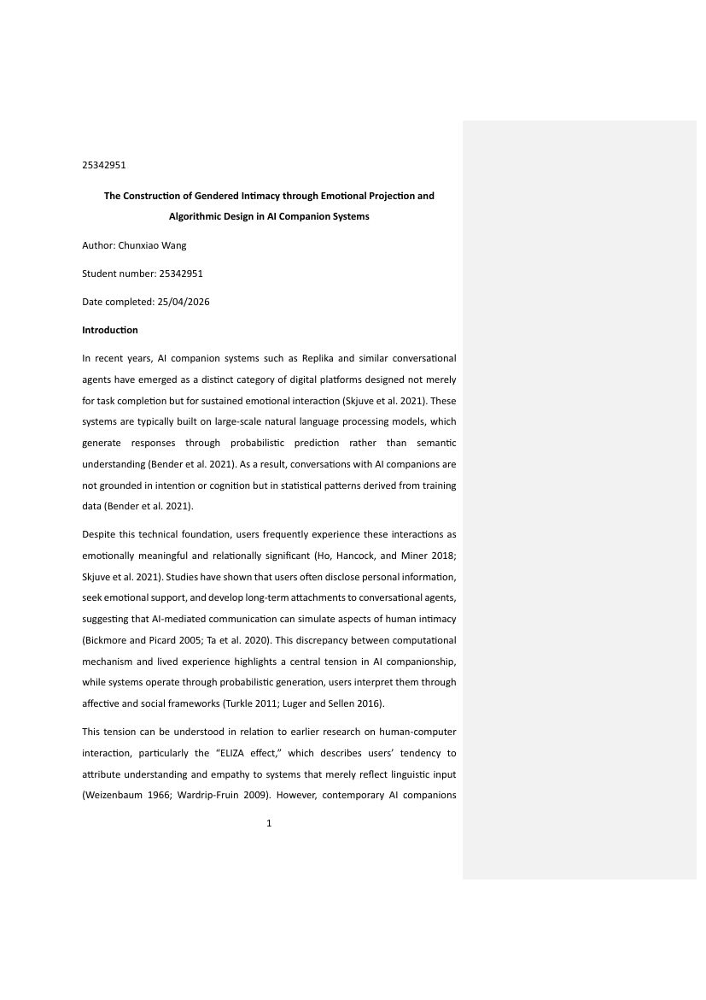
The construction of gendered intimacy in AI companion systems
An analysis of how AI companion platforms like Replika combine probabilistic language generation with feminized interactional design to produce a co-produced sense of intimacy — and what that reveals about emotional labour, user projection, and platform power.
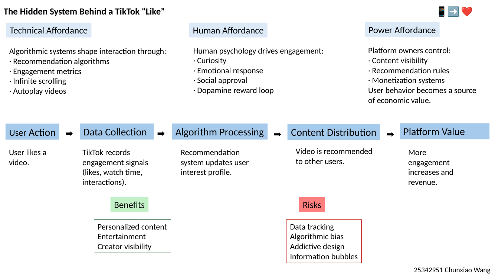
The hidden system behind a TikTok "like"
A short breakdown of what happens — technically and socially — the moment a user taps "like": from engagement data, to algorithmic processing, to platform value, and the human and power dynamics running underneath.
Curriculum design
Turning a dataset of existing courses into a proposal for a new one.
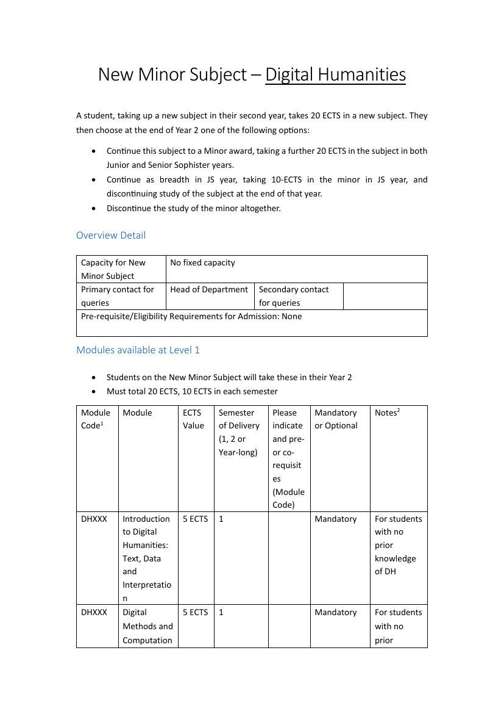
Designing a new Digital Humanities minor
I built a dataset of DH modules taught across universities in Ireland, the UK, Europe, and the US, then used Python to find co-occurrence patterns between technologies (Python, NLP, GIS, metadata) and disciplines. Those patterns — text-based methods clustering with literary studies, GIS clustering with history and heritage — shaped a four-year minor that moves from foundational concepts, to applied methods, to critical engagement with AI and data ethics.